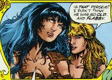
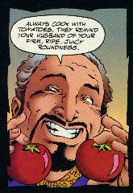
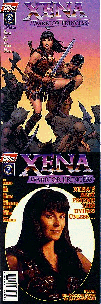
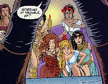
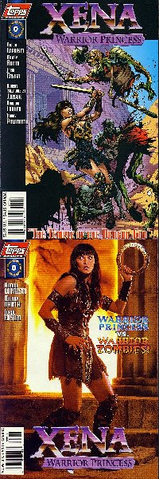
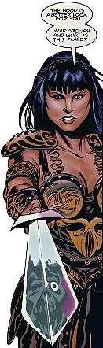
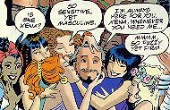

Xena: Warrior Princess #1 (of 2)
Story 1 Title: Revenge of the Gorgons
Story 2 Title: Theft of the Young Lovelies
Date: August 1997
Actual Release: August 27, 1997
Pages: 32 (20 pgs first story, 5 pgs second story)
Cover Price: $2.95
Story 1 Writer: Roy Thomas
Story 1 Pencils: Joyce Chin
Story 1 Inks: Andy Lanning
Story 1 Letters: Ken Lopez
Story 1 Colors: Evelyn Stein and Digital Chameleon
Story 2 Writer: Robert Trebor
Story 2 Pencils: Amanda Conner
Story 2 Inks: Jimmy Palmiotti
Story 2 Letters: Ken Lopez
Story 2 Colors: Digital Chameleon
Editor: Renee Witterstaetter
Painted Cover: Scott Campbell
Photo Cover 1: Unknown
Photo Cover 2: Unknown
NOTE: Xena: Warrior Princess created by Robert Tapert and John Schulian
OVERVIEW:
Story 1:
Gabrielle is telling stories at a fair, exagerating and having a good time. It is King Perseus' festival, but Gabrielle is beginning to think they will never see the King. She asks Xena if it's true that Perseus is as great a warrior as Herc, and Xena tells how Perseus defeated Medusa.
Salmoneus pops in to visit the two, and explains that he's the promoter of the festival. He says that he's heard a rumor that an attempt will be made on the king's life, so he took on extra security, in the form of Herc and Iolaus. Xena helps the two take on a drunken giant, then Joxer arrives.
As everyone ignores Joxer, a stranger offers 20 gold pieces to see Xena and Herc battle each other. They turn him down, and Herc goes off to visit his mother. Xena notices that the king is about to make an appearance, and gathers the others. They watch the hooded stranger, afraid that he's the one who will try to kill Perseus.

But he's not the threat. Two old women in the audience suddenly reveal themselves to be Medusa's sisters, and they intend to take revenge on Perseus by destroying his kingdom. They quickly start turning people to stone, and the people don't have a chance, because the gorgons can shoot beams that turn folk into stone. Eye-contact is no longer necessary.
Xena notices that the beams only affect living creatures, not cloth, and so tries to blind one of them with a robe. She fails, and Iolaus is turned to stone trying to help her. The mysterious stranger warns Gabrielle, but it's too late, she is pierced by a spear and turned to stone at the same moment. Xena manages to get the gorgons to beam each other, and they destroy themselves.
Xena checks on Gabrielle. The legends say that with the Gorgons dead, those turned to stone will become flesh again in thirty days. Gabrielle will die whan that happens. The mysterious stranger offers help. He claims to be Gilgamesh, and he's on a quest to find the flower of Never-Death. If Xena helps him, he says there will be enough to save Gabrielle also.
Story 2:

Girls are vanishing from Salmoneus' finishing school. Xena and Gabrielle enroll to help solve the mystery. After warning the girls to stay in pairs, Gabrielle and another girl are kidnapped.
COMMENTS:
This book had three cover variations, two photo covers and one art cover. One of the photo covers is an exclusive of American Entertainment.
Includes the first ever Xena Letter Column: The Xena Scribes.
The second story has a paging problem, the second and third pages should be opposite each other. The story reads much more sensibly if they are.
This is part one of a two issue mini-series. The Xena title will apparently be made up of lots of minis, not an ongoing title.
CONCLUSION:
Two for the price of one! I love getting back-up stories, and I think this one will be a good one. A good start to the series of mini-series that Xena is poised to become.
Review Date 4 Oct 1997 by Laura Gjovaag

Xena: Warrior Princess #2 (of 2)
Story 1 Title: The Plant of Never-Death
Story 2 Title: Theft of the Young Lovelies Part 2
Date: September 1997
Actual Release: Oct 1, 1997
Pages: 32 (20 pgs first story, 5 pgs second story)
Cover Price: $2.95
Story 1 Writer: Roy Thomas
Story 1 Pencils: Joyce Chin
Story 1 Inks: Andy Lanning
Story 1 Letters: Ken Lopez
Story 1 Colors: Evelyn Stein and Digital Chameleon
Story 2 Writer: Robert Trebor
Story 2 Pencils: Amanda Conner
Story 2 Inks: Jimmy Palmiotti
Story 2 Letters: Ken Lopez
Story 2 Colors: Digital Chameleon
Editor: Renee Witterstaetter
Painted Cover: Dave Stevens
Photo Cover 1: Unknown
NOTE: Xena: Warrior Princess created by Robert Tapert and John Schulian
OVERVIEW:
Story 1:
Xena and Gilgamesh are in Mesopotamia, on the quest for the plant of Never-Death. As journey in a rocky country, they hear scratching on the rocks around them, and are confronted by Lion-Men, like Centaurs, only half lion instead of horse. Gilgamesh explains that they eat humans.
Then Gilgamesh tells his own story, why he is on this quest. He was a mighty warrior, King of Urak. His best friend was Enkidu, a beast man that Gilgamesh had fought and tamed. They had shared many adventures, and endured many perils, but Enkidu finally died, and plunged Gilgamesh into depression because he realized that he, too, would someday die. In his despair, he sought out Utnapishtim, the only survivor of The Flood, and asked how to become immortal. Utnapishtim told him of the plant of Never-Death, which Gilgamesh found and would've taken, but a serpent ate it. However, because he had touched the plant, his aging was slowed. He had lived the last five centuries waiting for the plant to finally bloom again.
As they talk, Joxer drops in on them.
The threesome enter the land of Dilmun on the back of a giant serpent, controlled by a man-ape who is also immortal. Joxer and Xena find the plant, and Gilgamesh knocks them both unconscious when Xena asks how to make it flower. Xena awakes tied up... Gilgamesh explains that the only way to gain immmortality on the second try is to feed the plant the blood of a mighty warrior. And Xena's blood is it.
But even as he starts to slit her throat, he realizes that he can't bring himself to kill her for his own immortality. Which is actually good for him, as the plant has aquired guardians who are quite angry at him, and he needs Xena's skills to defeat the rock creatures that attack.
Gilgamesh watches the flowers that started to bloom as he cut Xena fade, and swears that though he will die ashamed at what he tried to do to Xena, he will help her save Gabrielle. He rips up the plant so that he can bring the healing powers of it's dying leaves back to Gabrielle.
They arrive barely in time, and save Gabrielle, though Iolaus tries to protect her from Gilgamesh (who used him as a shield in the battle against the Gorgons). Then Gilgamesh leaves to go home to Urak to die. And Hercules arrives, his month-long visit with his mother over, and asks if anthing happened while he was gone...
Story 2:
Salmoneus is sorry that he has put Gabrielle in danger, but Xena assures him everything will be ok. Gabrielle's big mouth, in the meantime, is getting her noticed by her captors. Salmoneus overhears two girls talking about setting up the others for kidnapping, and takes them to Xena. Gabrielle, though, is about to be auctioned off...
COMMENTS:

The photo cover is apparently an exclusive of American Entertainment.
The art in the first story is just gorgeous. Not only are the styles and details rich and varied, but simple things like perspective are used to their full effect. One page has Joxer in the distance, headed into a valley, with Gilgamesh trailing, and Xena farther up, and looks just wonderful from Joxer's raised arms to Gilgamesh's trailing cloak. Another picture has Xena underneath a dead tree, with the shadows of the dead branches across her body. It's very well done.
Part three of the Salmoneus story is in Xena #0, the third issue of the first Xena mini-series.
CONCLUSION:
Great art and an incredible story by Roy Thomas makes this book well worth the pennies. And the back up story is promising to be a fun jaunt.
Review Date 8 November 1997 by Laura Gjovaag

Xena: Warrior Princess #0
Story 1 Title: The Temple of the Dragon God
Story 2 Title: Theft of the Young Lovelies Part 3
Date: October 1997
Actual Release: Oct 29, 1997
Pages: 32 (22 pgs first story, 5 pgs second story)
Cover Price: $2.95
Story 1 Writer: Aaron Lopresti
Story 1 Pencils: Aaron Lopresti
Story 1 Inks: Hilary Barta, Jordi Ensign, Gary Martin, Tom Simmons, Aaron Lopresti
Story 1 Letters: John Workman
Story 1 Colors: Digital Chameleon
Story 2 Writer: Robert Trebor
Story 2 Pencils: Amanda Conner
Story 2 Inks: Jimmy Palmiotti
Story 2 Letters: Ken Lopez
Story 2 Colors: Digital Chameleon
Editor: Renee Witterstaetter
Painted Cover: Aaron Lopresti
Photo Cover 1: Unknown
NOTE: Xena: Warrior Princess created by Robert Tapert and John Schulian
OVERVIEW:

Story 1:
Gabrielle is bored and wants some exitement. She gets some, as dead hands reach up from the ground and pull her down while Xena battles more of the zombies that are attacking them. After grabbing Gabrielle, the attack stops.
Alone, Xena goes to the temple that they had seen just before the attack. She is greeted by a hooded stranger, a zombie himself, who tells her of Tuatarius, the Dragon God, who has claimed Gabrielle's soul. To win it back, and free all the other slaves and zombies in the dragon's thrall, Xena must fight past three hideous monsters who no hero has defeated, then stab the dragon in its heart.
The zombie caretaker warns her that no hero has ever defeated the dragon, not even Iannaki, the famous dragon slayer. She goes on anyway.
In a short battle she easily takes out the three hideous monsters, then faces the dragon himself, who holds Gabrielle. She battles the creature, and nearly loses her soul, but in the end she succeeds in stabbing it through the heart, breaking its spell and freeing Gabrielle. And the others held captive. Including the zombie caretaker, who turns out to be Iannaki himself, transformed into his previous form.
He gives Xena a last kiss before his spirit goes to its eternal rest.
Story 2:
Gabrielle's auction has started, but the bidding is interrupted at 1953 Dinars with a voice calling out "75 Dinars and an Aegean Stables Manure Chip!" The voice belongs to Salmoneus, who is just distracting the scum for Xena, who attacks in a fury. Gabrielle joins in, while Salmoneus goes to find and free the other girls. And so the slave business is shut down, and Salmoneus is more popular than ever with his students.
COMMENTS:

The art continues to be consistently good. It's not as stylish in this issue as in the last two, but is still very well done and appropriate. This is one heckuva book...
Xena didn't seem to like Iannaki's last kiss. She asked him how long it had been since he brushed his teeth. There's a lot of that sort of humor in this story.
It's pointed out in the letter column that the Greeks didn't have tomatoes, so Salmoneus could hardly have urged his students to cook with them. The editor, Renee Witterstaetter, comes up with a few good explanations for it...
CONCLUSION:
Great stories, great art, and lots of value for money. If you haven't been buying these books, and you're a Xena fan, you're missing out.
Review Date 8 November 1997 by Laura Gjovaag
Xena: Warrior Princess Collection
Date: February 1998
Actual Release: May not have shipped.
Pages: 80
Cover Price: $9.95
Writer: Roy Thomas
Pencils: Jeff Butler
Inks: Steve Montano
COMMENTS:
Reprints Xena 1, 2, and 0 (the first mini-series) and the TV Guide Xena mini-comic.